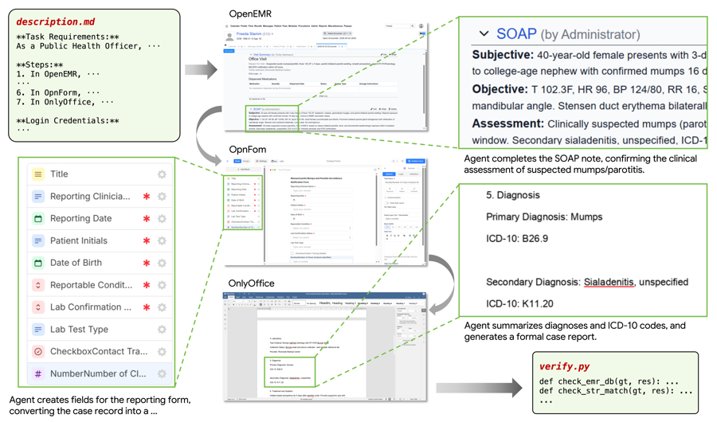
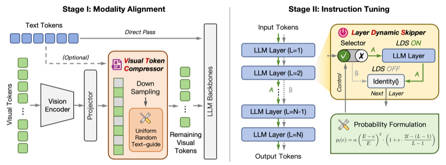
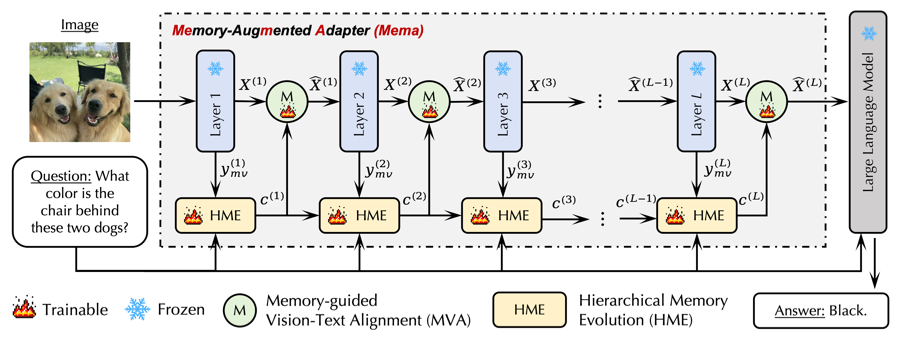
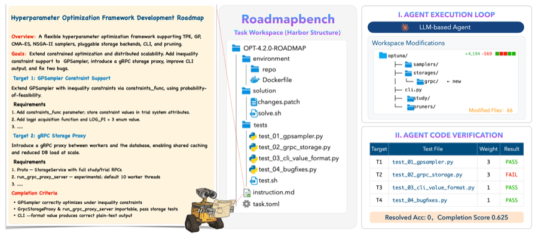

About
Hello! I am Kean Shi, a first-year master student at Peking University (School of Computer Science), supervised by Prof. Baobao Chang. Prior to this, I received my bachelor degree in Computer Science from Tianjin University in 2025.
My research interests lie at the intersection of Agentic AI, GUI Agents and Multimodal Large Language Models (MLLM). Now I am a research intern at UniPat AI . And I was also fortunate to collaborate with researchers from 0G and UIUC .
Feel free to contact me for a chat or collaboration!
Recent News
- Jul 2026 Kimi K3 got 60.1% in SaaS-Bench!
- May 2026 SaaS-Bench was released to arXiv, check it out!
- Sep 2025 STS was released to arXiv, check it out!
Research
-

SaaS-Bench: Can Computer-Use Agents Leverage Real-World SaaS to Solve Professional Workflows?
arXiv preprint · 2026
Computer-Using Agents (CUAs) are rapidly extending large language models (LLMs) beyond text-based reasoning toward action execution in more complex environments, such as web browsers and graphical user interfaces (GUIs). However, existing web and GUI agent benchmarks often rely on simplified settings, isolated tasks, or short-horizon interactions, making it difficult to assess capabilities of agents in realistic professional workflows. Software-as-a-Service (SaaS) environments are a natural choice for CUA evaluation, as they host a large share of modern digital work and naturally involve dynamic system states, cross-application coordination, domain-specific knowledge, and long-horizon dependencies. To this end, we introduce SaaS-Bench, a benchmark built on 23 deployable SaaS systems across six professional domains, containing 106 tasks grounded in realistic work scenarios. These tasks require long-horizon execution, cover both text-only and multimodal settings, and are evaluated with weighted verification checkpoints that measure strict task completion and partial progress. Experiments show that representative LLM-based agents struggle on SaaS-Bench, with even the strongest model completing fewer than 4% of tasks end-to-end, exposing limitations in planning, state tracking, cross-application context maintenance, and error recovery.
-

Improving MLLM Training Efficiency via Stage-Aware Sparsity
arXiv preprint · 2025
Multimodal Large Language Models (MLLMs) have demonstrated outstanding performance across a variety of domains. However, training MLLMs is often inefficient, as much of the computation is redundant due to the long input sequences from multimodal data and underutilized inter-layer operations. Notably, such redundancy is not static but varies across different stages of training. Building on this observation, we shift the focus to the training process itself and propose a training-efficient framework based on sparse representations, termed the Sparse Training Scheme (STS). Instead of applying a uniform sparsity strategy, STS adopts a stage-aware design that adapts to different sources of redundancy during training. Specifically, the framework consists of two complementary components: the Visual Token Compressor, which reduces the information load by compressing visual tokens during modality alignment, and the Layer Dynamic Skipper, which mitigates computational overhead by dynamically skipping unnecessary layers during instruction tuning. Our approach is broadly applicable to diverse MLLM architectures and has been extensively evaluated on multiple benchmarks, demonstrating its effectiveness and efficiency.
-

Mema: Memory-Augmented Adapter for Enhanced Vision-Language Understanding
arXiv preprint · 2026
Recent multimodal large language models (MLLMs) widely adopt multi-layer visual feature fusion to enhance visual representation. However, existing approaches typically perform static concatenation or weighted aggregation after visual encoding, without intervening in the representation formation process itself. As a result, fine-grained details from early layers may be progressively suppressed during hierarchical abstraction. Moreover, directly introducing shallow-layer features into the language model often leads to semantic distribution mismatch with the visual feature space that the LLM's cross-attention layers were pretrained on, which typically requires additional adaptation or fine-tuning of the LLM. To address these limitations, we revisit visual representation learning from the perspective of representation evolution control and propose a cross-layer memory-modulated vision framework (SCVM). Specifically, we introduce a recursively updated cross-layer memory state inside the vision encoder to model long-range inter-layer dependencies. We further design a layer-wise feedback modulation mechanism that refreshes token representations at each layer based on the accumulated memory, thereby structurally regulating the representation evolution trajectory. In addition, we incorporate an auxiliary semantic alignment objective that explicitly supervises the final memory state, encouraging progressive compression and reinforcement of task-relevant information. Experimental results on multiple visual question answering and hallucination evaluation benchmarks demonstrate that SCVM achieves consistent performance improvements without expanding visual tokens, introducing additional vision encoders, or modifying or fine-tuning the language model.
-

RoadmapBench: Evaluating Long-Horizon Agentic Software Development Across Version Upgrades
arXiv preprint · 2026
Paper Code Leaderboard Dataset
Coding agents are increasingly deployed in real software development, where a single version iteration requires months of coordinated work across many files. However, most existing benchmarks focus predominantly on single-issue bug fixes from Python repositories, with coarse pass/fail evaluation outcomes, and thus fail to capture long-horizon, multi-target development at real engineering scale. To address this gap, we present RoadmapBench, a benchmark of 115 long-horizon coding tasks grounded in real open-source version upgrades across 17 repositories and 5 programming languages. Each task places the agent on a source-version code snapshot and provides a multi-target roadmap instruction requiring it to implement the functionality introduced in the target version, with a median modification of 3,700 lines across 51 files. We conduct a systematic evaluation on thirteen frontier models and find that even the strongest, Claude-Opus-4.7, resolves only 39.1% of tasks, while the weakest achieves merely 5.2%, in stark contrast to existing bug-fix benchmarks, suggesting that long-horizon software development remains a largely unsolved problem.
Full list on Google Scholar.
Path
Experience
-
UniPat AI Jan 2026 – Now
Research Intern, Beijing
-

Xiaomi Inc. Apr 2024 – Jul 2024
Engineering Intern
Education
-
Peking University Sep 2025 – Now
M.S. in Computer Science, School of Computer Science
Supervised by Prof. Baobao Chang -
Tianjin University Sep 2021 – Jun 2025
B.Eng. in Computer Science, College of Intelligence and Computing
-
Tianjin Nankai High School Sep 2018 – Jun 2021
Senior High School
Selected Awards
- Outstanding Graduate Student Jul 2025
- National Scholarship of undergraduate student (Top 1‰ in China) Dec 2024
Services
- Teaching assistant of “Introduction to Computing (C)” at EECS, PKU
Contact
The best way to reach me is by email at kashi25@stu.pku.edu.cn.
Visitors around the world